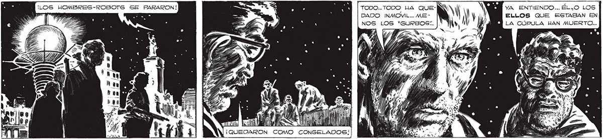
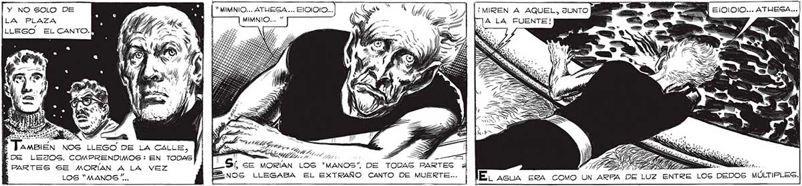

¡LOG HOMBRES-ROBOTS SE PARARON! YA ENTIENDO... ÉL.O LOS 5 - JA q DADO INMOVIL... ME - ' ¡ ! ELLOS QUE ESTABAN EN La NOS LOS “GURBOS:.. l LA CÚPULA HAN MUERTO... A AN 61 E ¡QUEDARON COMO CONGELADOS!| EL NO RECIBIR ORDENES AGUSTO A LOS 'MANOS”.. Y yA GABEMOS QUE EL MIEDO LOS MATA: LA GLANDULA DEL TERROR LES EMPIEZA A TRABAJAR. AL SABERSE AGUGTADOG, YA NO ENVIARON MAG ORDENES A LOS ROBOTS... DENTRO DE LA CÚPULA POSIBLEMENTE, TENLAN UNA ATMOSFERA ESPECIAL... FRANCO ROMPIO LA CÚPULA, Y ESA ATMOSFERA ESCAPO... AL MORIR LOS ELLOS, LOS 'MANOS” DEJARON DE RECIBIR ORDENES... S A. : ÁArssso0aA LA ESFERA, DE NUEVO VEAMOS LAS ESTRELLAS. DE LA PLAZA SUBIA YA UN CORO EXTRAÑO. UNA MELODÍA IRREAL... UNA MELODÍA QUE YA HABIAMOS ESCUCHADO EN OTRAG DOS OCASIONES... Y NO SOLO DE ' : Y“ MIMNIO... ATHESA ... ELJOIOIO... LA PLAZA 7] 7 BR | MIMNIO... ” LLEGO ELCANTO. > PARTES SE MORÍAN A LA VEZ LOS “MANOS /...

